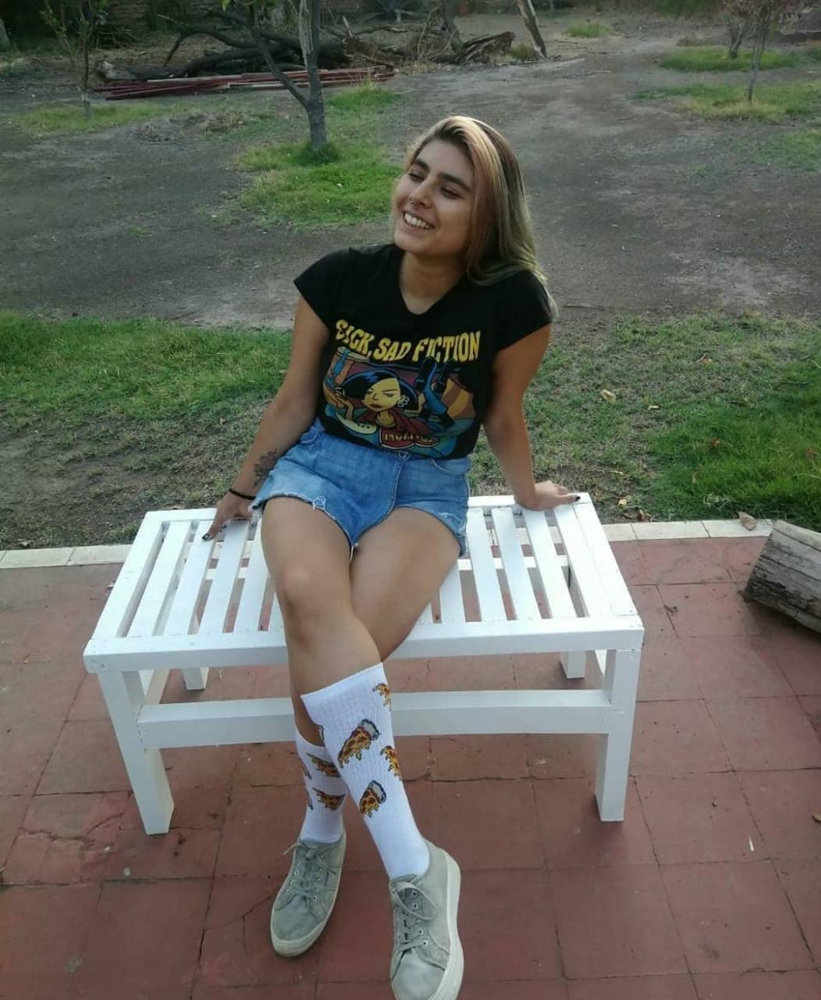

Yo, la estrella máxima
Mini biografía:
Me llamo Valentina Rodriguez, tengo 23 años y me dicen negra o Vale. Nací aqui en santiago pero toda mi familia es de la tercera región, así que siempre estuve viajando de aqui para allá.
Me crié en una familia evangélica y fui parte de esa religión hasta los 16.
Estuve en tres colegios, el primero era mapuche y no usábamos uniforme, el segundo parecía una base militar, nos obligaban a usar calcetines con rombos rojos, y el tercero fue católico (el chiste se cuenta solo).
Me costó decidir qué estudiar así que me metí a Ing Civil en Matemática en la USM, estuve tres años y por un problema de salud tuve que congelar. Los de la usm son muy $%/&# y como estaba fuera de plazo para congelar no me dejaron y tuve que echarme todo el semtre, quedé con nota muy baja y decidí irme.
Me tomé un año sabático para saber qué hacer con mi vida, mientras me metí a trabajar en el famoso DUNKIN DONUT´S, de la nada me convertí en jefa de turno y me convertí en la mejor en el cargo. Me robé muchas donas y con mis compas nos regodiabamos de manjar y nutella.
Gracias a que fui jefa de turno y que me dieron una capacitacion para ser subgerente, me di cuenta que quizás lo mio era ser industrial. Así que di la PSU, me metí a la UAI y aqui estamos.

Esta soy yo, no encontré fotos más decentes :$
Me llamo Valentina Rodriguez, tengo 23 años y me dicen negra o Vale. Nací aqui en santiago pero toda mi familia es de la tercera región, así que siempre estuve viajando de aqui para allá. Me crié en una familia evangélica y fui parte de esa religión hasta los 16. Estuve en tres colegios, el primero era mapuche y no usábamos uniforme, el segundo parecía una base militar, nos obligaban a usar calcetines con rombos rojos, y el tercero fue católico (el chiste se cuenta solo). Me costó decidir qué estudiar así que me metí a Ing Civil en Matemática en la USM, estuve tres años y por un problema de salud tuve que congelar. Los de la usm son muy $%/&# y como estaba fuera de plazo para congelar no me dejaron y tuve que echarme todo el semtre, quedé con nota muy baja y decidí irme. Me tomé un año sabático para saber qué hacer con mi vida, mientras me metí a trabajar en el famoso DUNKIN DONUT´S, de la nada me convertí en jefa de turno y me convertí en la mejor en el cargo. Me robé muchas donas y con mis compas nos regodiabamos de manjar y nutella. Gracias a que fui jefa de turno y que me dieron una capacitacion para ser subgerente, me di cuenta que quizás lo mio era ser industrial. Así que di la PSU, me metí a la UAI y aqui estamos.
Mis gustos y disgustos:
Me entretiene mucho cuidar plantitas (tengo un huerto con muchas cositas)
Me gusta ver anime uwu
Me carga la gente que dice "pitza" y no "picsa"
Amo las papitas fritas con mi vida
Me gusta mucho ver pelis (soy exigente si)
Odio que me mientan :c
Me gusta mucho que me den amor uwu
Datos curiosos, obvio que sobre mi:
Me han llevado detenida dos veces, en una pasé toda la noche en el calabozo
Tengo una pequeña mancha de nacimiento en la espalda y adentro hay un lunar, tiene apariencia de un huevo frito *-*
Soy Diaguita
Una vez cuando estaba siendo de cajera en el DUNKIN (en las condes), llegó Felipe Kast y toqué su tarjeta de crédito xD (nunca habia tenido tanta plata en mi mano)
No puedo guiñar un ojo ni silbar uwu
Una vez me doblé fuerte el pie y a los 6 meses me di cuenta que habia sido esguince (nunca me dejó de doler el pie) y ahora lo tengo super débil :c
¿Puedes ser tan cool como yo? Veamos e.e
A continuación hay un test para ver qué tan cool eres ¿Quieres probar?
En las siguientes preguntas habrán 3 alternativas, las cuales coresponden a si te identificas mucho o no con la frase que aparecerá, donde 1 es que te identificas muy poco o nada, 2 es que te da lo mismo y 3 es que te identificas muchito.
Frases
Prefiero aguantar la respiración 1 minuto a tener que aguantar ese tiempo sin pestañear
Si me caigo en público, lo hago más dramático para que no se rian y se preocupen (y no pasar vergüenza)
Entre un dinosaurio y un barco pirata fantasma, prefiero el dinosaurio
Prefiero mil veces comerme un helado en invierno que comer cochayuyo
El capitalismo es el causante y/o potenciador, de todos los males de la sociedad actual
Mi mamá ve Doramas (novelas coreanas)
Ahora responde estas preguntas, suerte!
¿Si te enteras que tienes una carie, qué harías?
- Obvio que voy altiro al dentista
- Espero a que me duela mucho para ir al doctor
- No hago nada, total me voy a morir igual
Si te levantas a las 6am (en cuarentena) es más probable que sea para:
- Estudiar ¿qué más podria ser?
- Tomar desayuno/bajon porque estuve despiert@ all night
- Diseñar un plan maestro que me ayude a pasar todos los ramos
Si te ganas mil millones de pesos ¿Qué sería lo primero que harías?
- Compraria un terreno muy grande para hacerlo refugio de fauna silvestre
- Invierto el 50% en una empresa (comprometedora) que se especializa en la fabricación de trompetas
- Me compro un completo (o pizza)
Contáctame bb
Omití muchas cosas sobre mi, no podrias saber tantas cosas sin antes invitarme un helado, si quieres puedes hablarme por aqui:
Espero que te haya gustado esta página, esta hecha con mucho amor para el mundo <3
En las siguientes preguntas habrán 3 alternativas, las cuales coresponden a si te identificas mucho o no con la frase que aparecerá, donde 1 es que te identificas muy poco o nada, 2 es que te da lo mismo y 3 es que te identificas muchito.
¿Si te enteras que tienes una carie, qué harías?
- Obvio que voy altiro al dentista
- Espero a que me duela mucho para ir al doctor
- No hago nada, total me voy a morir igual
Si te levantas a las 6am (en cuarentena) es más probable que sea para:
- Estudiar ¿qué más podria ser?
- Tomar desayuno/bajon porque estuve despiert@ all night
- Diseñar un plan maestro que me ayude a pasar todos los ramos
Si te ganas mil millones de pesos ¿Qué sería lo primero que harías?
- Compraria un terreno muy grande para hacerlo refugio de fauna silvestre
- Invierto el 50% en una empresa (comprometedora) que se especializa en la fabricación de trompetas
- Me compro un completo (o pizza)